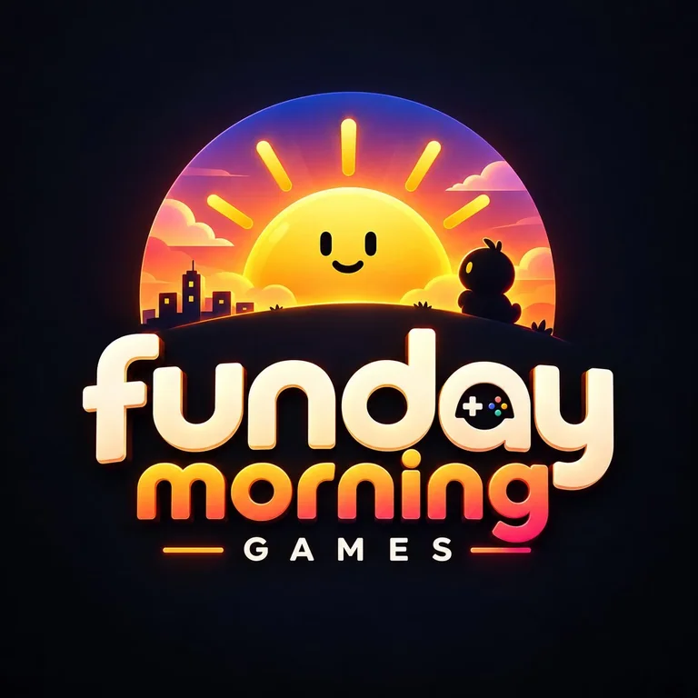

Bütün bölümler açık ve sonu yok: 6. bölümden sonrası numarasından üretilir. Her bölümde hedefler: ateşböceği, Kusursuz (en fazla par atış) ve Akış.
Görevler her gece yarısı (Türkiye saati) yenilenir ve o gün herkes için aynıdır. Sayılan koşular: geçilen bölümler ile biten Sonsuz ve Günlük Kuyu koşuları. Görev ödülleri toplam ödül puanına eklenir. Başarımların üç kademesi var: Bronz, Gümüş, Altın.
Kat: bir bina katı 3 metre sayılır.
Kuyu v0.20 · prototip · Funday Morning Games